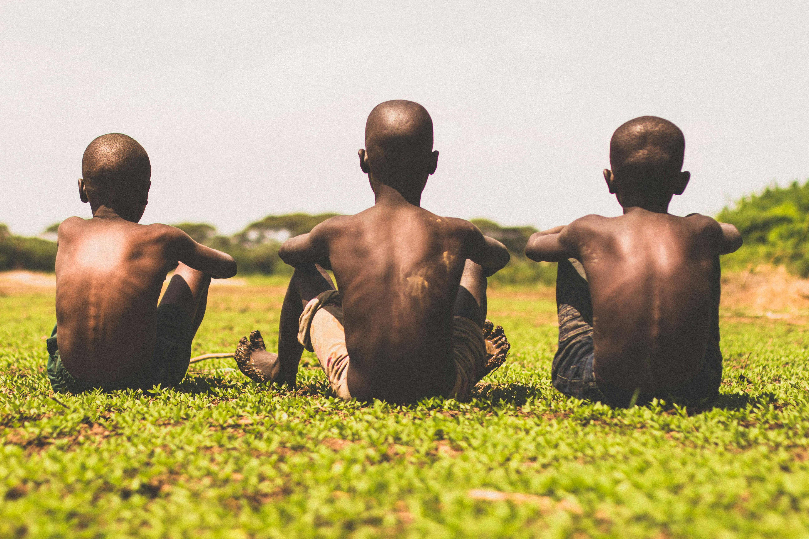

Together We Can Save The World
If we don't stop the destruction of nature,nothing else will matter.
JOIN US
If we don't stop the destruction of nature,nothing else will matter.
JOIN USAsterlook International was conceptualized on 3rd April 2013 by Anthony Basooma. The idea emerged from the high levels of poor grades and illiteracy among children from disadvantaged families due to poor education support. Asterlook International also addresses the deteriorating environment through sustainable utilization ,protection and engaging in activities that maintain and improve ecological stability hence the slogan "For Environment We Go Green And Keep It"
LEARN ABOUT US
Asterlook International, through the Asterlook Foundation, provides educational support to vulnerable children in Uganda who have demonstrated good academic performance within their communities.
MORE DETAILS